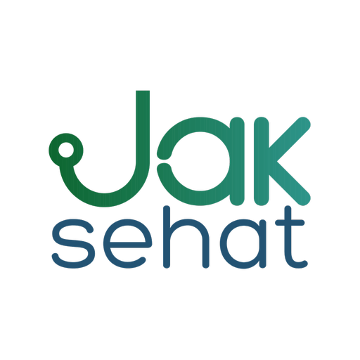

MedClaim & Koding Klinis — RSUD Kepulauan Seribu
Referensi Diagnosis, ICD-10, ICD-9-CM, Tarif E-Klaim BPJS & Kalkulator Kriteria Klinis Interaktif

Referensi Diagnosis, ICD-10, ICD-9-CM, Tarif E-Klaim BPJS & Kalkulator Kriteria Klinis Interaktif
